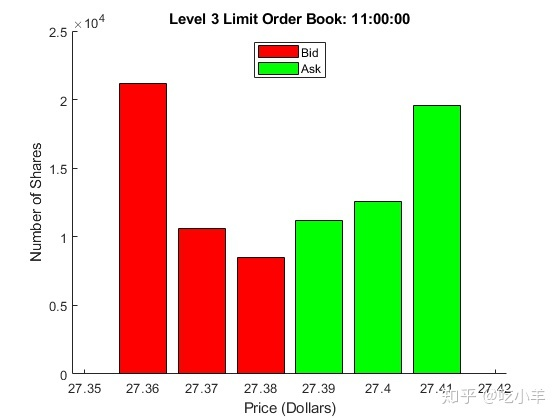
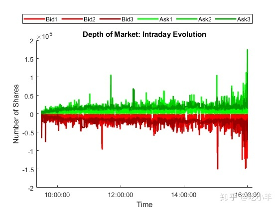
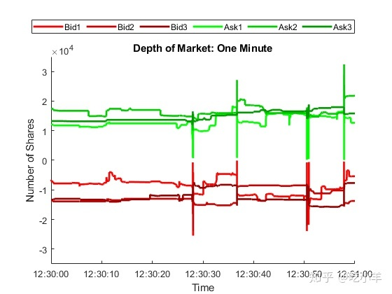

Home
本示例显示了在MATLAB中管理，处理和可视化大量财务数据的技术。它是有关用于统计套利的机器学习的一系列相关示例的一部分。
处理大数据
诸如纳斯达克这样的电子交易金融市场，会在毫秒级的时间执行订单，产生了大量的数据。可以挖掘数据流以获得统计套利机会，但是处理和存储动态分析信息的传统方法可能会被大数据淹没。幸运的是，出现了新的计算方法，MATLAB有一系列用于实现它们的工具。
计算机内存提供高速访问但容量有限，而外部存储提供低速访问但容量可能无限。计算在内存中进行；计算机从外部存储中调出数据和结果。
数据文件
本示例使用由LOBSTER [1]提供的样本数据中，包含了INTC的纳斯达克一个交易日的交易数据[2]，数据文件打包在Financial Toolbox?的LOBSTER_SampleFile_INTC_2012-06-21_5.zip中。将zip文件的内容提取到当前文件夹中。扩展的文件（包括两个CSV数据文件和文本文件LOBSTER_SampleFiles_ReadMe.txt占用93.7 MB的内存。
unzip("LOBSTER_SampleFile_INTC_2012-06-21_5.zip");数据描述了限价订单簿（LOB）的盘中演变，它是市场订单（最佳价格），限价订单（指定价格）以及由此产生的买卖记录。数据包括这些事件的准确时间，并跟踪从到达到取消或执行的订单。在交易日的每个时刻，LOB买卖双方的订单均处于不同水平，远离最低要价（卖出订单）和最高出价（买入订单）之间的中间价格。
第5级数据（两边距离中间价格有5级）包含在2个CSV文件。从消息文件名中提取交易日期。
MSGFileName = "INTC_2012-06-21_34200000_57600000_message_5.csv"; % Message file (description of data)
LOBFileName = "INTC_2012-06-21_34200000_57600000_orderbook_5.csv"; % Data file
?
[ticker,rem] = strtok(MSGFileName,'_');
date = strtok(rem,'_'); 数据存储
每日数据流会聚累积，需要存储空间。数据仓库是对于那些太大，不适合放在内存中的数据的集合库。
使用tabularTextDatastore创建消息和数据文件的数据仓库。由于文件包含不同格式的数据，因此请分别创建数据仓库。通过将'ReadVariableNames'名称-值对参数设置为false来忽略通用列标题（例如，VarName1）。将标题替换为从LOBSTER_SampleFiles_ReadMe.txt获得的描述性变量名称。将'ReadSize'名称-值对参数设置为'file'以允许在每个交易日结束时将格式类似的文件附加到现有数据仓库中。
DSMSG = tabularTextDatastore(MSGFileName,'ReadVariableNames',false,'ReadSize','file');
DSMSG.VariableNames = ["Time","Type","OrderID","Size","Price","Direction"];
?
DSLOB = tabularTextDatastore(LOBFileName,'ReadVariableNames',false,'ReadSize','file');
DSLOB.VariableNames = ["AskPrice1","AskSize1","BidPrice1","BidSize1",...
"AskPrice2","AskSize2","BidPrice2","BidSize2",...
"AskPrice3","AskSize3","BidPrice3","BidSize3",...
"AskPrice4","AskSize4","BidPrice4","BidSize4",...
"AskPrice5","AskSize5","BidPrice5","BidSize5"];通过选择Time和3级数据来创建组合的数据仓库。
TimeVariable = "Time";
DSMSG.SelectedVariableNames = TimeVariable;
?
LOB3Variables = ["AskPrice1","AskSize1","BidPrice1","BidSize1",...
"AskPrice2","AskSize2","BidPrice2","BidSize2",...
"AskPrice3","AskSize3","BidPrice3","BidSize3"];
DSLOB.SelectedVariableNames = LOB3Variables;
DS = combine(DSMSG,DSLOB); 您可以预览组合数据仓库的前几行，而无需将数据加载到内存中。
DSPreview = preview(DS);
LOBPreview = DSPreview(:,1:5)
LOBPreview=8×5 table
Time AskPrice1 AskSize1 BidPrice1 BidSize1
_____ _________ ________ _________ ________
?
34200 2.752e+05 66 2.751e+05 400
34200 2.752e+05 166 2.751e+05 400
34200 2.752e+05 166 2.751e+05 400
34200 2.752e+05 166 2.751e+05 400
34200 2.752e+05 166 2.751e+05 300
34200 2.752e+05 166 2.751e+05 300
34200 2.752e+05 166 2.751e+05 300
34200 2.752e+05 166 2.751e+05 300 预览显示了要价和出价，这表示最接近中间价格的1级数据。时间单位是午夜后的秒数，价格单位是美元金额乘以10,000，单位是股票数量（请参阅参考资料LOBSTER_SampleFiles_ReadMe.txt）。
Tall数组和时间表
Tall数组使用MapReduce技术处理由数据仓库支持的会导致内存不足的数据。使用MapReduce时，除非执行使用该数据的特定计算，否则Tall数组将保持未计算状态。
为MapReduce设置执行环境设置为本地MATLAB会话，而不是通过调用mapreducer(0)使用Parallel Computing Toolbox? 。然后，从数据仓库DS中用tall创建一个Tall数组。在Tall数组中预览数据。
mapreducer(0)
DT = tall(DS);
?
DTPreview = DT(:,1:5)
DTPreview =
?
M×5 tall table
?
Time AskPrice1 AskSize1 BidPrice1 BidSize1
_____ _________ ________ _________ ________
?
34200 2.752e+05 66 2.751e+05 400
34200 2.752e+05 166 2.751e+05 400
34200 2.752e+05 166 2.751e+05 400
34200 2.752e+05 166 2.751e+05 400
34200 2.752e+05 166 2.751e+05 300
34200 2.752e+05 166 2.751e+05 300
34200 2.752e+05 166 2.751e+05 300
34200 2.752e+05 166 2.751e+05 300
: : : : :
: : : : :时间表允许您执行特定于时间序列的操作。由于LOB数据由并发时间序列组成，因此请转换DT为Tall时间表。
DT.Time = seconds(DT.Time); % Cast time as a duration from midnight.
DTT = table2timetable(DT);
?
DTTPreview = DTT(:,1:4)
DTTPreview =
?
M×4 tall timetable
?
Time AskPrice1 AskSize1 BidPrice1 BidSize1
_________ _________ ________ _________ ________
?
34200 sec 2.752e+05 66 2.751e+05 400
34200 sec 2.752e+05 166 2.751e+05 400
34200 sec 2.752e+05 166 2.751e+05 400
34200 sec 2.752e+05 166 2.751e+05 400
34200 sec 2.752e+05 166 2.751e+05 300
34200 sec 2.752e+05 166 2.751e+05 300
34200 sec 2.752e+05 166 2.751e+05 300
34200 sec 2.752e+05 166 2.751e+05 300
: : : : :
: : : : :在MATLAB工作区中显示所有变量。
whos
Name Size Bytes Class Attributes
?
DS 1x1 8 matlab.io.datastore.CombinedDatastore
DSLOB 1x1 8 matlab.io.datastore.TabularTextDatastore
DSMSG 1x1 8 matlab.io.datastore.TabularTextDatastore
DSPreview 8x13 4516 table
DT Mx13 4718 tall
DTPreview Mx5 2608 tall
DTT Mx12 4512 tall
DTTPreview Mx4 2416 tall
LOB3Variables 1x12 936 string
LOBFileName 1x1 246 string
LOBPreview 8x5 2204 table
MSGFileName 1x1 230 string
TimeVariable 1x1 150 string
date 1x1 166 string
rem 1x1 230 string
ticker 1x1 150 string 因为所有数据都在数据存仓库中，所以工作空间使用很少的内存。
预处理和计算数据
在计算评估之前，Tall数组允许对计算进行预处理或排队，从而改善了工作空间中的内存管理。
中间价格S和失衡指数I用于建模LOB的动态。要对它们的计算进行排队，根据DTT定义计算和时间基点。
timeBase = DTT.Time;
MidPrice = (DTT.BidPrice1 + DTT.AskPrice1)/2;
?
% LOB level 3 imbalance index:
?
lambda = 0.5; % Hyperparameter
weights = exp(-(lambda)*[0 1 2]);
VAsk = weights(1)*DTT.AskSize1 + weights(2)*DTT.AskSize2 + weights(3)*DTT.AskSize3;
VBid = weights(1)*DTT.BidSize1 + weights(2)*DTT.BidSize2 + weights(3)*DTT.BidSize3;
ImbalanceIndex = (VBid-VAsk)./(VBid+VAsk);不平衡指数是中间价格两侧的要价和买价的加权平均值[3]。不平衡指数是未来价格走势的潜在指标。变量lambda是一个超参数，它是训练之前指定的参数，而不是由机器学习算法估算的。超参数可能会影响模型的性能。特征工程是选择要在机器学习算法中使用的特定领域超参数的过程。您可以调整超参数以优化交易策略。
要将预处理的表达式带入内存并对其求值，请使用gather函数。此过程称为延迟评估。
[t,S,I] = gather(timeBase,MidPrice,ImbalanceIndex);
Evaluating tall expression using the Local MATLAB Session:
- Pass 1 of 1: Completed in 2.1 sec
Evaluation completed in 2.3 sec一次gather调用即可通过数据仓库一次评估多个预处理表达式。
确定样本大小，即数据中更新的数量。
numTicks = length(t)
numTicks = 581030每日LOB数据包含581,030个更新。
检查点数据
您可以将未评估和评估的数据都保存到外部存储中，以备后用。
在时基前加上日期，并将结果转换为datetime数组。保存所得到的日期时间阵列 MidPrice和ImbalanceIndex到在指定位置MAT文件。
dateTimeBase = datetime(date) + timeBase;
Today = timetable(dateTimeBase,MidPrice,ImbalanceIndex)
Today =
?
581,030×2 tall timetable
?
dateTimeBase MidPrice ImbalanceIndex
____________________ __________ ______________
?
21-Jun-2012 09:30:00 2.7515e+05 -0.205
21-Jun-2012 09:30:00 2.7515e+05 -0.26006
21-Jun-2012 09:30:00 2.7515e+05 -0.26006
21-Jun-2012 09:30:00 2.7515e+05 -0.086772
21-Jun-2012 09:30:00 2.7515e+05 -0.15581
21-Jun-2012 09:30:00 2.7515e+05 -0.35382
21-Jun-2012 09:30:00 2.7515e+05 -0.19084
21-Jun-2012 09:30:00 2.7515e+05 -0.19084
: : :
: : :
location = fullfile(pwd,"ExchangeData",ticker,date);
write(location,Today,'FileType','mat')
Writing tall data to folder I:\Documents\examples\examples\finance-ex97702880\ExchangeData\INTC\2012-06-21
Evaluating tall expression using the Local MATLAB Session:
- Pass 1 of 1: Completed in 3 sec
Evaluation completed in 3.3 sec在每个交易日结束时，文件被写入一次。该代码将数据保存到带日期戳的文件夹中的文件中。该系列ExchangeData子文件夹用作历史数据存储库。
或者，您可以将使用gather计算的工作空间变量直接保存到当前文件夹中的MAT文件中。
save("LOBVars.mat","t","S","I")在准备稍后进行模型验证时，请评估市场定单价格并将其添加到同一文件中。
[MOBid,MOAsk] = gather(DTT.BidPrice1,DTT.AskPrice1);
Evaluating tall expression using the Local MATLAB Session:
- Pass 1 of 1: Completed in 1.8 sec
Evaluation completed in 1.9 sec
save("LOBVars.mat","MOBid","MOAsk","-append")本示例的其余部分仅使用未经计算的Tall时间表DTT。从工作空间中清除其他变量。
clearvars -except DTT
whos
Name Size Bytes Class Attributes
?
DTT 581,030x12 4512 tall 数据可视化
要可视化大量数据，必须以某种方式汇总，分类或以某种方式采样数据，以减少在屏幕上绘制的点数。
LOB快照
可视化的一种方法是仅评估数据的选定子样本。在一天的特定时间（上午11点）创建LOB的快照。
sampleTimeTarget = seconds(11*60*60); % Seconds after midnight
sampleTimes = withtol(sampleTimeTarget,seconds(1)); % 1 second tolerance
sampleLOB = DTT(sampleTimes,:);
?
numTimes = gather(size(sampleLOB,1))
Evaluating tall expression using the Local MATLAB Session:
- Pass 1 of 1: Completed in 2.1 sec
Evaluation completed in 2.2 sec
numTimes = 23在上午11点的一秒内有23个数据更新。对于快照，请使用最接近中间时间的数据中值。
sampleLOB = sampleLOB(round(numTimes/2),:);
sampleTime = sampleLOB.Time;
?
sampleBidPrices = [sampleLOB.BidPrice1,sampleLOB.BidPrice2,sampleLOB.BidPrice3];
sampleBidSizes = [sampleLOB.BidSize1,sampleLOB.BidSize2,sampleLOB.BidSize3];
sampleAskPrices = [sampleLOB.AskPrice1,sampleLOB.AskPrice2,sampleLOB.AskPrice3];
sampleAskSizes = [sampleLOB.AskSize1,sampleLOB.AskSize2,sampleLOB.AskSize3];
?
[sampleTime,sampleBidPrices,sampleBidSizes,sampleAskPrices,sampleAskSizes] = ...
gather(sampleTime,sampleBidPrices,sampleBidSizes,sampleAskPrices,sampleAskSizes);
Evaluating tall expression using the Local MATLAB Session:
- Pass 1 of 2: Completed in 1.8 sec
- Pass 2 of 2: Completed in 2.1 sec
Evaluation completed in 4.3 sec通过使用bar，可视化由gather返回的有限的数据样本。
figure
hold on
?
bar((sampleBidPrices/10000),sampleBidSizes,'r')
bar((sampleAskPrices/10000),sampleAskSizes,'g')
hold off
?
xlabel("Price (Dollars)")
ylabel("Number of Shares")
legend(["Bid","Ask"],'Location','North')
title(strcat("Level 3 Limit Order Book: ",datestr(sampleTime,"HH:MM:SS")))
市场深度
一些可视化函数直接与Tall阵列一起使用，不需要使用gather 。这些函数自动对数据进行采样以降低像素密度。通过使用时间表DTT和绘图函数plot，可视化三级盘中交易的深度，从而显示流动性的时间演变。
figure
hold on
?
plot(DTT.Time,-DTT.BidSize1,'Color',[1.0 0 0],'LineWidth',2)
plot(DTT.Time,-DTT.BidSize2,'Color',[0.8 0 0],'LineWidth',2)
plot(DTT.Time,-DTT.BidSize3,'Color',[0.6 0 0],'LineWidth',2)
?
plot(DTT.Time,DTT.AskSize1,'Color',[0 1.0 0],'LineWidth',2)
plot(DTT.Time,DTT.AskSize2,'Color',[0 0.8 0],'LineWidth',2)
plot(DTT.Time,DTT.AskSize3,'Color',[0 0.6 0],'LineWidth',2)
?
hold off
?
xlabel("Time")
ylabel("Number of Shares")
title("Depth of Market: Intraday Evolution")
legend(["Bid1","Bid2","Bid3","Ask1","Ask2","Ask3"],'Location','NorthOutside','Orientation','Horizontal');
要显示详细信息，请限制时间间隔。
xlim(seconds([45000 45060]))
ylim([-35000 35000])
title("Depth of Market: One Minute")
概要
本示例介绍了在内存内部以及外部使用大数据的基础知识。它显示了如何设置，组合和更新外部数据存储，然后创建用于处理数据的Tall数组，而无需在MATLAB工作区中分配变量。gather函数将数据传输到工作空间中以进行计算和进一步分析。该示例显示了如何通过数据采样或通过直接对内存不足数据起作用的MATLAB绘图功能来可视化数据。
参考文献
[1] LOBSTER Limit Order Book Data. Berlin: frischedaten UG (haftungsbeschr?nkt).
[2] NASDAQ Historical TotalView-ITCH Data. New York: The Nasdaq, Inc.
[3] Rubisov, Anton D. "Statistical Arbitrage Using Limit Order Book Imbalance." Master's thesis, University of Toronto, 2015.
注：本文根据MATLAB官网内容修改而成。
======================================================================
我的测试结果及程序
下面是我测试的代码：